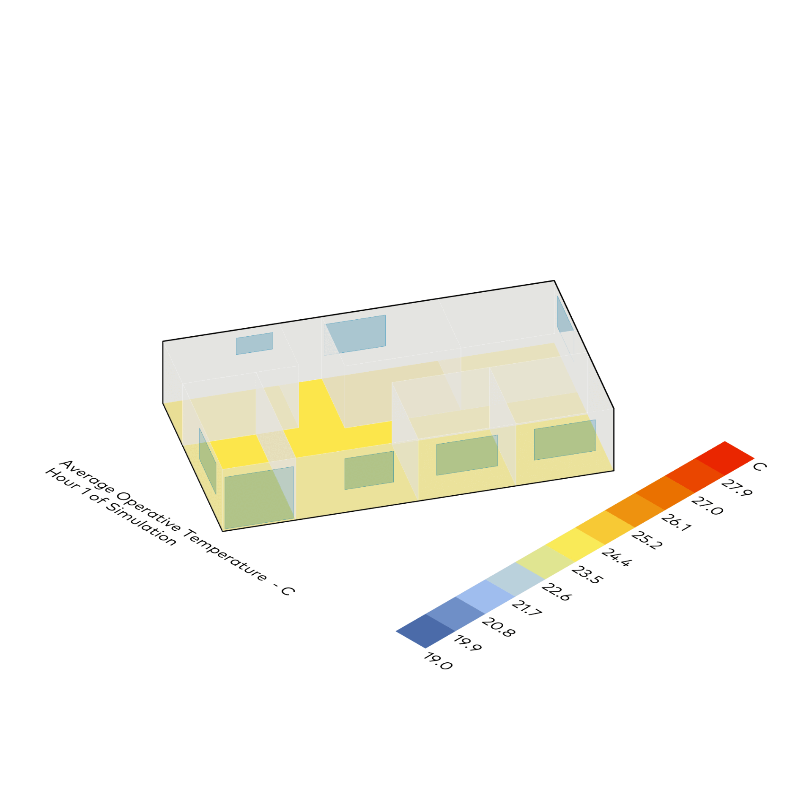
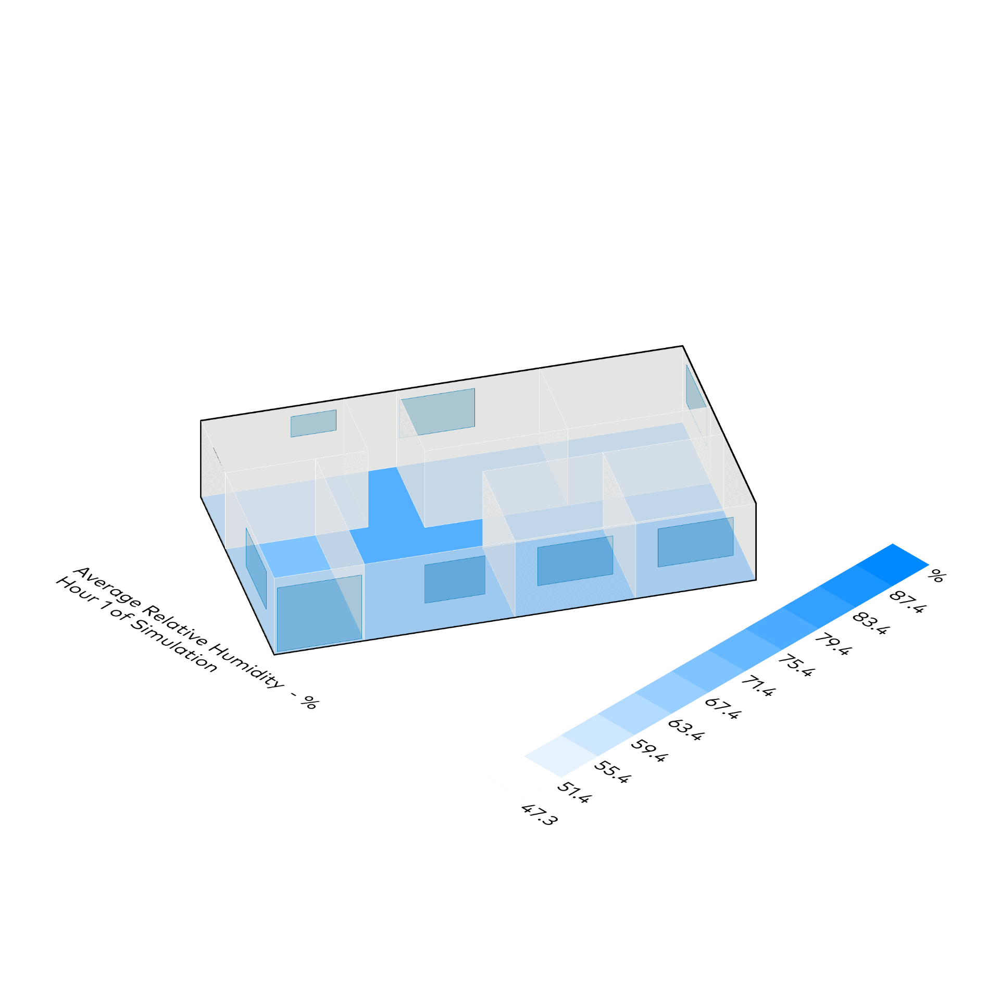
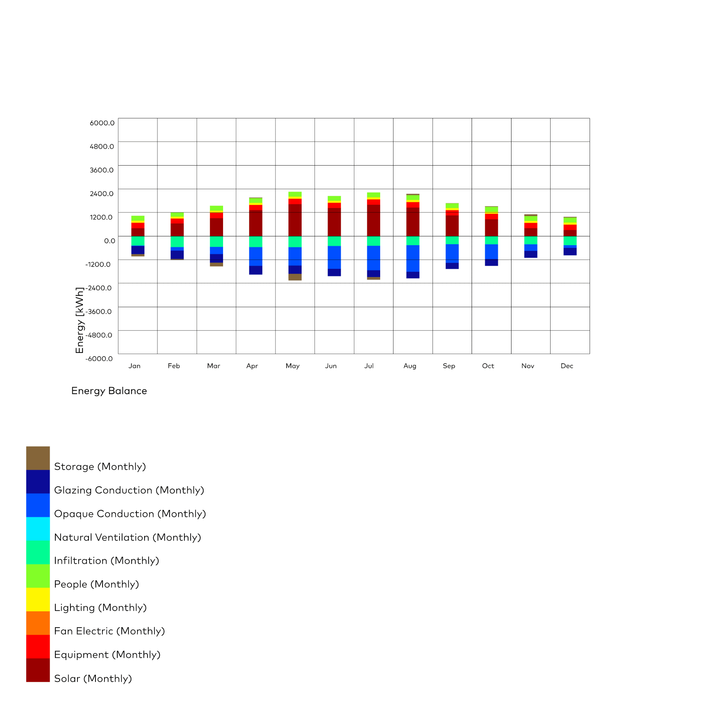

Farbzonen + Energiebilanz
Honeybee
⬤ Honeybee visualisiert räumlich differenziert durch Farbcodierung von Zonen/Oberflächen. Energiefluss-Diagramme identifizieren Quellen (Solargewinne, Lasten, Lüftung) und Senken (Verluste, Kühlung). Dekodiert WARUM (Kausalitäten) und TREIBER (Faktoren) – nicht nur kWh/a. Zuordnung zu Bauteilen für zielgerichtete Optimierung: nachvollziehbar, planungsstark.
⬤ Honeybee visualizes spatially differentiated areas/surfaces using color coding. Energy flow diagrams identify sources (solar gains, loads, ventilation) and sinks (losses, cooling). Decodes WHY (causalities) and DRIVERS (factors) – not just kWh/a. Assignment to components for targeted optimization: comprehensible, planning-oriented.